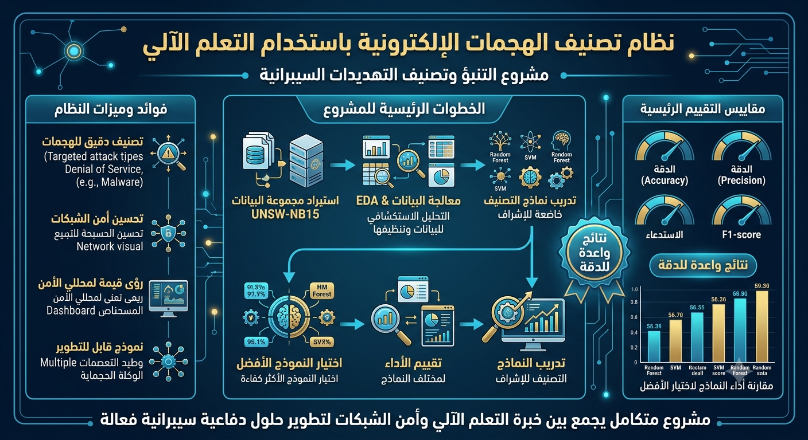
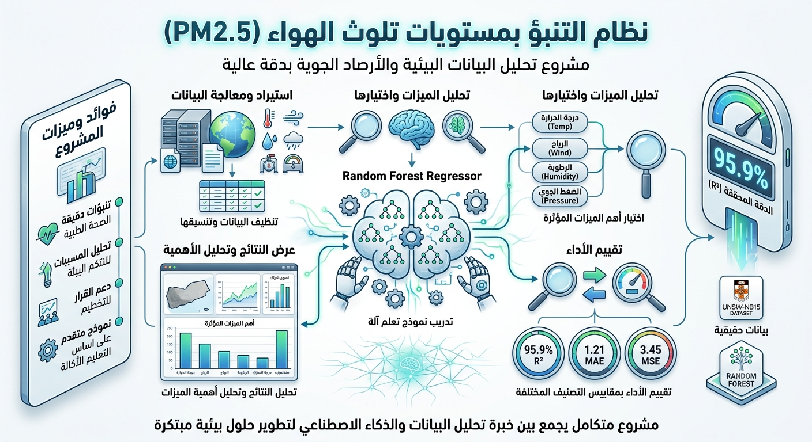
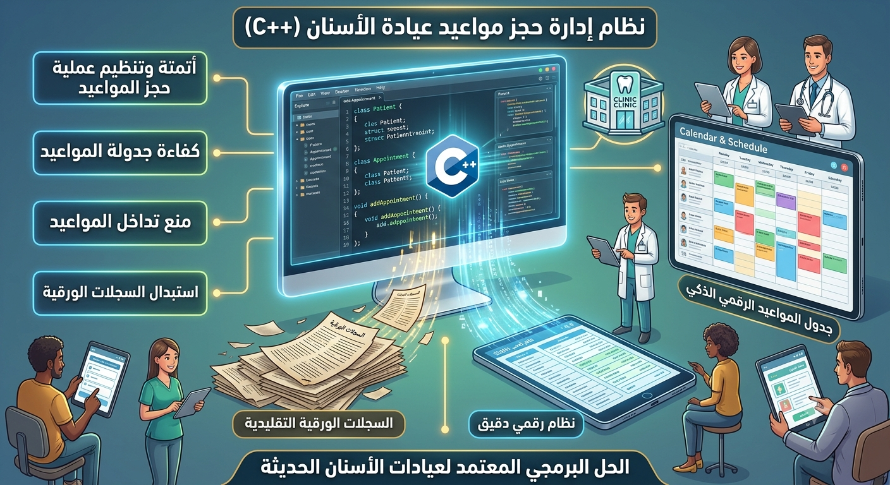
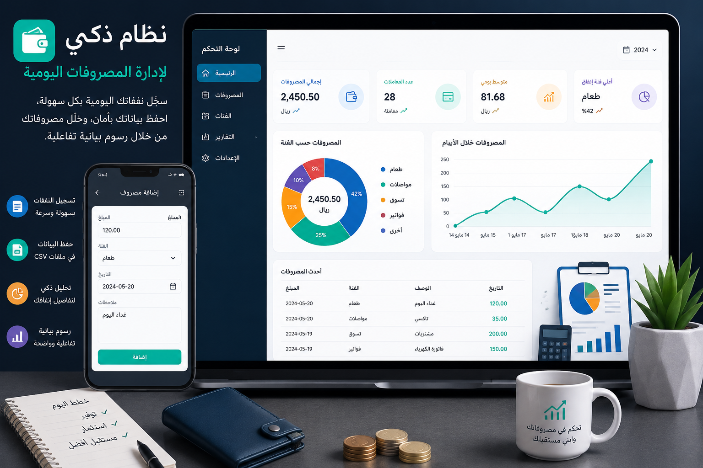

المشاريع

نظام التنبؤ بأمراض القلب
نموذج تعلم آلة للتنبؤ بالإصابة بأمراض القلب باستخدام مكتبة Scikit-learn، حقق دقة بلغت 87% بعد معالجة البيانات وتدريب النموذج وتقييم أدائه باستخدام مقاييس التصنيف المختلفة.

نظام تصنيف الهجمات الإلكترونية باستخدام التعلم الآلي
مشروع يهدف إلى بناء نموذج تعلم آلي لتصنيف أنواع الهجمات الإلكترونية باستخدام مجموعة بيانات UNSW-NB15. يشمل المشروع معالجة البيانات، والتحليل الاستكشافي، وتدريب نماذج تصنيف خاضعة للإشراف، ثم تقييم أدائها باستخدام مقاييس مثل Accuracy وPrecision وRecall وF1-score لاختيار النموذج الأكثر كفاءة

مشروع تلوث الهواء
مشروع تعلم آلة يهدف إلى التنبؤ بمستويات تلوث الهواء (PM2.5) من خلال تحليل البيانات البيئية والأرصاد الجوية. شمل المشروع معالجة البيانات، واختيار الميزات المهمة، وتدريب نموذج Random Forest Regressor للحصول على تنبؤات دقيقة، مع تقييم أداء النموذج باستخدام مقاييس مثل MAE وMSE وR²، بالإضافة إلى عرض النتائج وتحليل أهمية الميزات المؤثرة في التنبؤ..

نظام إدارة حجز مواعيد عيادة الأسنان
هو نظام برمجى مصمم بلغة C++ يهدف إلى أتمتة وتنظيم عملية حجز المواعيد داخل عيادات الأسنان، مستبدلاً السجلات الورقية التقليدية بنظام رقمي دقيق يضمن كفاءة جدولة المواعيد ومنع تداخلها.

نظام إدارة الحسابات والمصروفات
نظام ذكي لإدارة وتتبع المصروفات اليومية، يوفر تسجيل النفقات، وحفظها، وتحليلها بصريًا عبر رسوم بيانية تفاعلية.